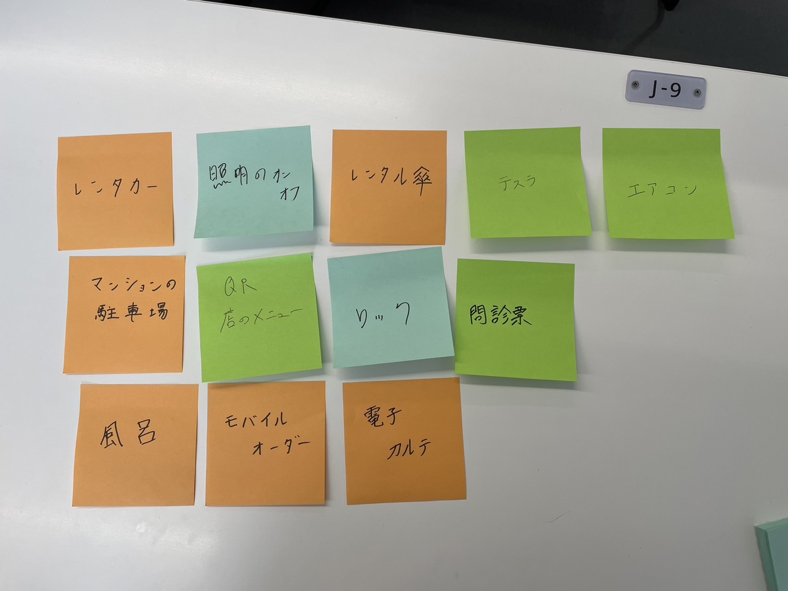
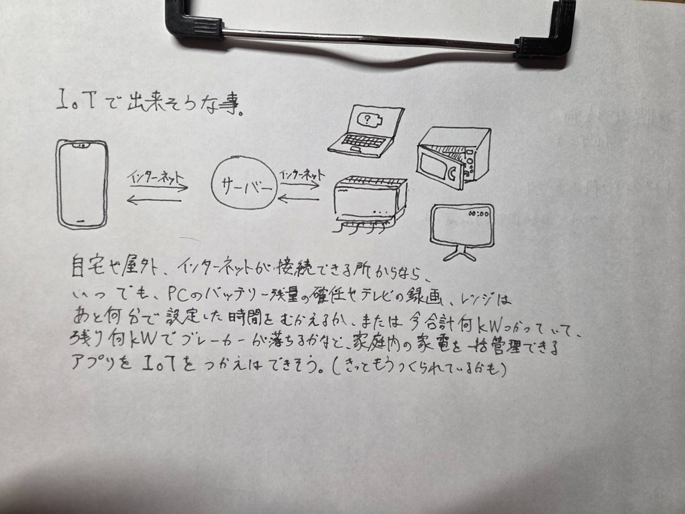

IoTとは何か
IoTとは、Internet of Thingsの略で、本来インターネトに接続されていなかったものをインターネットに繋げる技術です。
IoTは基本的に、デバイス・クラウド・プリケーションの三つの要素で構成されています。
物を動かしたり、センサーを使って物の状態を把握したりなど、さまざまなことができます。
参考文献
実験した動画
グループで実験した時の動画
大きくつまずくことなく達成できました。ソースコードを書き換えたりするときに光らなかったりはありました
IoT(遠隔操作)で何ができそうか？グループワークした内容

IoT(遠隔操作)で何ができそうか？自分で考えたアイディア
